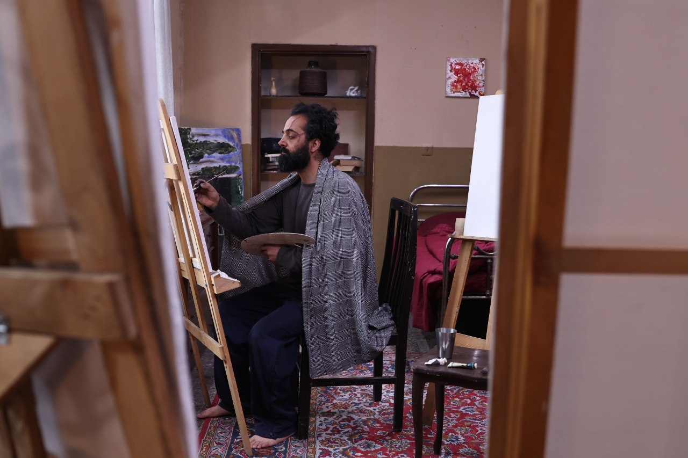

فیلم کوتاه «ماندالا» به نویسندگی و کارگردانی بهنام خسروی، اینبار با کسب جایزه بهترین فیلم کوتاه تجربی از دهمین دوره جشنواره بینالمللی فیلم TINFF، بار دیگر نام خود را در فهرست برگزیدگان رویدادهای معتبر سینمایی کانادا ثبت کرد. TINFF یکی از جشنوارههای شناختهشده و مورد تأیید جوایز سینمایی کانادا (Canadian Screen Awards) است و همین موضوع، ارزش این افتخار تازه را برای «ماندالا» دوچندان میکند.
این فیلم کوتاه پیشتر در همین دوره از TINFF در دو بخش Best Experimental Student Short و Best Narrative Short Experimental نامزد دریافت جایزه شده بود؛ نامزدی دوگانهای که اکنون با کسب عنوان بهترین فیلم کوتاه تجربی، به یکی از قطعیترین موفقیتهای «ماندالا» در این جشنواره تبدیل شده است.
در مراسم اختتامیه این دوره از جشنواره، سرکار خانم سحر به نمایندگی از عوامل فیلم در مراسم حضور یافت و این جایزه را به نمایندگی از «ماندالا» دریافت کرد. تیم سازنده فیلم، ضمن قدردانی از حضور ایشان در این مراسم، از برگزارکنندگان جشنواره و اعضای هیئت داوران نیز بهخاطر این افتخار ارزشمند تشکر کردهاند.
بهنام خسروی، فیلمساز، رماننویس و فیلمنامهنویس ایرانی، با «ماندالا» در ماههای اخیر یکی از پرحاشیهترین و پرافتخارترین مسیرهای جشنوارهای را در میان فیلمهای کوتاه ایرانی طی کرده است؛ مسیری که از نامزدی در TINFF آغاز شد و اکنون با کسب جایزه اصلی این جشنواره کانادایی ادامه مییابد.
جشنواره بینالمللی فیلم TINFF یکی از رویدادهای سینمایی است که هر ساله در تورنتو کانادا برگزار میشود و آثار کوتاه و بلند، داستانی، تجربی و مستند را از سراسر جهان در بخشهای متعدد رقابتی داوری میکند. تأیید این جشنواره از سوی جوایز سینمایی کانادا، به آن جایگاهی معتبر در میان رویدادهای مستقل قاره آمریکای شمالی داده است و راهیابی یک فیلم به فهرست برگزیدگان آن، معمولاً بهمعنای عبور از رقابتی فشرده با آثار متعدد از کشورهای مختلف است.
«ماندالا» با ساختاری تجربی و روایتی لایهمند، از همان ابتدای حضور خود در چرخه جشنوارهها توجه منتقدان و داوران را جلب کرد. انتخاب این فیلم در بخش تجربی TINFF، بازتابی از همین ویژگی است؛ اثری که بهنام خسروی نهتنها در نگارش فیلمنامه، بلکه در طراحی فرم و زبان تصویری آن نیز رویکردی متفاوت از الگوهای مرسوم روایت کوتاه در پیش گرفته است.
این جایزه در حالی به «ماندالا» رسید که این فیلم پیشتر نیز در جشنوارههای دیگری از جمله Accolade Global Film Competition مورد تقدیر قرار گرفته بود. تکرار این موفقیتها در جشنوارههای مختلف بینالمللی، نشان میدهد که استقبال از «ماندالا» محدود به یک رویداد یا یک منطقه جغرافیایی خاص نبوده و این فیلم توانسته در میان سلیقههای داوری متفاوت نیز جایگاه خود را پیدا کند.
تیم مستر شورتفیلم این موفقیت تازه را به بهنام خسروی و عوامل «ماندالا» تبریک میگوید و ادامه مسیر این فیلم کوتاه در جشنوارههای پیشرو را در همین بخش وبلاگ دنبال و منتشر خواهد کرد.